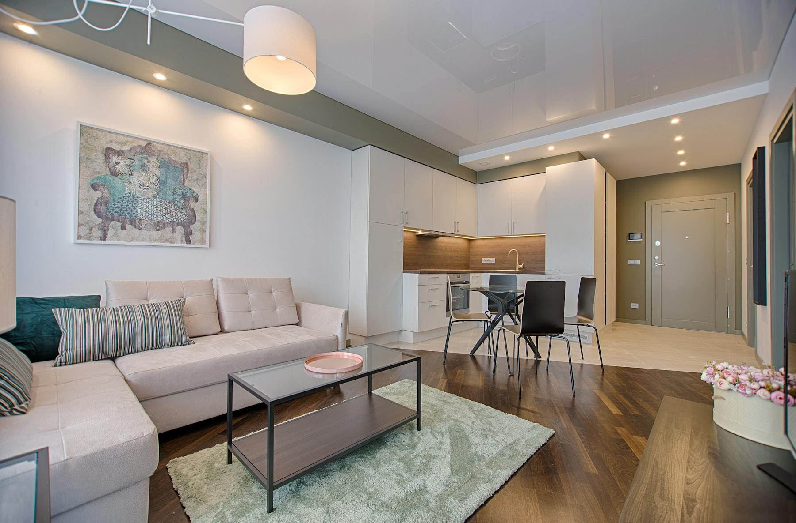
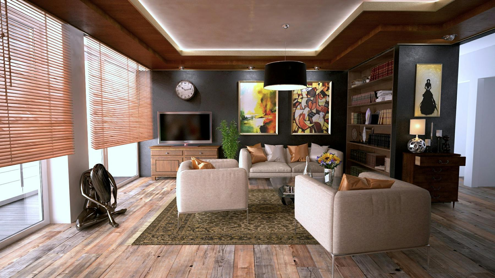
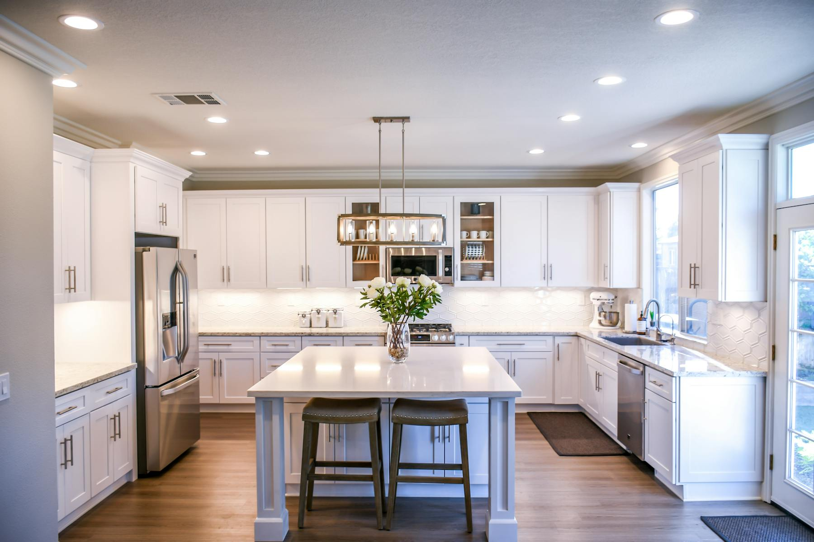
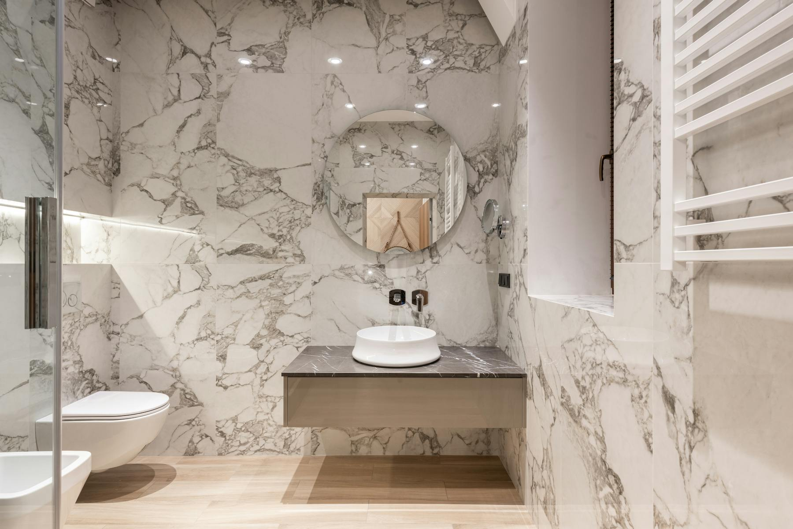

私宅整案
平面梳理、空间比例、硬装界面、灯光与家具配置
Maison Luma 以比例、光线、触感和留白为秩序 每个房间不是展示风格，而是让人的日常动作被重新安放：一杯水、一把椅子、一段午后的阴影
Service Scope
我们把审美判断落到可执行的平面、材质、家具、灯光和现场细节里 每个项目保留清晰节奏，不追求堆满，而追求住进去之后仍然成立
平面梳理、空间比例、硬装界面、灯光与家具配置
为已完成空间重新建立尺度、坐感、收纳和视觉停顿
色板、石材、木作、织物和金属细节的组合建议
Selected Spaces




Material Notes
亚麻、洞石、烟熏橡木、手工灰泥和细砂金属被放在同一套光线里 我们保留材质天然的不均匀，让空间有呼吸，而不是被抛光成样板间
Campaign 2026
一个高级的房间不急着解释自己 它把背景、路径、坐下来的位置和窗边的沉默安排好，然后退后一步
Studio Enquiry
适合私宅、精品商业空间与需要重新整理气质的房间 请附上城市、面积、现状照片和期待完成时间
studio@maison-luma.example